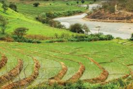

Los atractivos turísticos de Macará son variados y entre estos se encuentran los balnearios, los mismos que reciben miles de visitas, especialmente durante el verano y en feriados como carnaval.
La Lajilla Es un balneario natural que se encuentra en la parroquia Eloy Alfaro, aproximadamente a 3 km. al Este de la cabecera cantonal en las riveras del río Macará. En este lugar, la municipalidad acondicionó el sector para así brindar al turista o visitantes las comodidades que requiere. Este lugar es uno de los preferidos por los turistas y gente de la ciudad en tiempo de carnavales y todo tipo de fiestas populares.
Fondos Azules Lugar de cascadas naturales bajo un paradisíaco entorno de impresionante belleza natural, que emerge a la superficie de un conjunto de rocas de origen volcánico, que componen una serie de saltos de agua, en sucesivas represas o cascadas naturales. Para quienes deseen visitar este atractivo de cascadas, se encuentra vía al cantón Zapotillo, en el barrio Laguar, de la parroquia y cantón Macará, a 12 Km. de la ciudad, en la parte sur de la misma la cual goza de un clima cálido y paisaje natural. Para llegar hasta las cascadas, se tiene que recorrer una vía de tercer orden la misma que adentra al visitante o turista, hasta llegar al lugar donde se puede disfrutar de baño refrescante y sobre todo la exquisitez de tranquilidad que la naturaleza rodea a estas extraordinarias cascadas convirtiéndolas en un balneario natural listo para recibir a los turistas. La Cruz del Panadero Este sector es un balneario natural el cual se encuentra ubicado a una distancia de 12 Km. de la ciudad, donde brinda a quien lo visita la calidez y tranquilidad de las aguas que ofrece la quebrada que se encuentra en este sector y de igual forma el ambiente de la naturaleza que lo rodea, además de poder admirar y conocer el porqué del nombre la Cruz del Panadero. Este atractivo cuenta con ciertas adecuaciones como cabañas, baños y bar que hacen de la visita de propios y extraños más acogedora. El Resbaloncito Se encuentra ubicado en la vía panamericana a 5.5 Km. de la ciudad de Macará, vía Catacocha. Este sector se caracteriza por presentar o simular un resbalón con agua el mismo que es de piedra sólida y que brinda a quien gusta disfrutar de lo natural una experiencia única. Playa Guayabito Se encuentra a 12 Km. del cantón Macará ubicada en el barrio Lagua, de la parroquia y cantón Macará en la parte sur de la ciudad. Se caracteriza por un oasis natural junto al río que divide Ecuador con Perú. Esta playa se encuentra rodeada de un bosque Seco de gran Magnitud, esto se debe principalmente a su privilegiado clima caluroso. La playa guayabito ha querido plasmar la esencia de esta hermosa ciudad. La playa es un mundo por admirar no solo por su bosque, sino porque ofrece un clima digno para disfrutar de sol, arena, brisa
|  | Macara cuidad | ir a sitio geografico ir a costrumbre ir a home ir a galeria